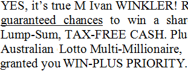
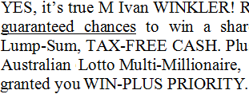
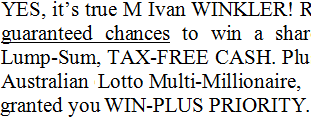

Of course, watching the TV is so common and transparent for us humans that we instantly move beyond the (very complex) physical and neurological phenomena involved. (That some people with brain disorders are no longer capable of recognizing faces, objects etc. is proof of that complexity!) Computers on the other hand require very detailed instructions — software — to get anything done.
The OCR software converts the image — an electronic world of colored dots — into the “abstract” world of real intelligence — characters, symbols that have meaning. As and Bs, 1s and 7s, semicolons and question marks.

Actually, we don’t speak of “dots” but of “pixels” in the computer world. The word “pixel” is short for “picture element”; the term indicates the smallest distinguishable square dot to compose a raster image. (Pixels apply to scanners, monitors and printers.)
The impressionists, and even more so the pointillists among them, used a similar technique on the canvas. Move in too close to an impressionist painting and you just see patches of paint. The bigger picture got lost; you could be fooled into thinking you’re looking at an abstract painting. But move back to the correct distance and you’re watching, say, a sunday picnic by the river, a flower arrangement etc. Move in on a pointillist painting and you’re watching not patches of paint but actual dots!
The higher the resolution, the more pixels you get on a given square surface. In other words, the higher the resolution, the smaller the pixels become! The “resolution” is a measure of the fineness of detail that the scanner produces. And the more detail you have, the more you can blow up a picture before it becomes “grainy”.
The resolution of an image file is expressed in dots per (linear) inch or “dpi”. When your scan has a 300 dpi resolution, it takes 300 dots to form a colored line 1 inch (2.54 cm.) long.
Don’t confuse bitmaps with vector graphics used in drawings created with Adobe Illustrator, CorelDraw etc. Or think of the CAD-CAM drawings created by engineers and architects. More popular examples of vector images are the clipart illustrations you’re using in your presentations or the logo that your company got designed by a graphic artist.
Vector graphics use mathematical expressions to represent geometric shapes — lines, polygons, curves, circles etc. —, bitmaps are composed of colored pixels.
Bitmaps depend on the image resolution. With vector graphics, the image quality doesn’t degrade as you enlarge the size of the illustration: the lines are drawn with great precision — whatever the dimensions may be. The lines stay crisp as you zoom in, you don’t hit a wall where you’re looking at the individual pixels!
(Or rather: when you do, it’s the monitor’s or the printer’s fault. You’re watching these logos on your screen, which means they’re converted into bitmaps anyway, but you get the meaning. Trust me, I downloaded the vector graphic file of the Facebook logo and produced three bitmap images from that single file, doubling the size each time. I got a crisp result in all cases, and that’s the point I’m making here.)
The text is in the eye of the beholder — The intelligence of OCR — Bitmaps only take you so far — 90,000 kids on the block — OCR is the ultimate data cruncher! — OCR deserves recognition
Home page — Intro — Scanners — Images — History — OCR — Languages — Accuracy — Output — BCR — Pen scanners — Sitemap — Search — Contact – Feedback